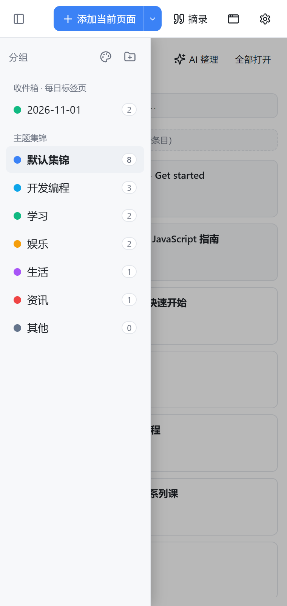
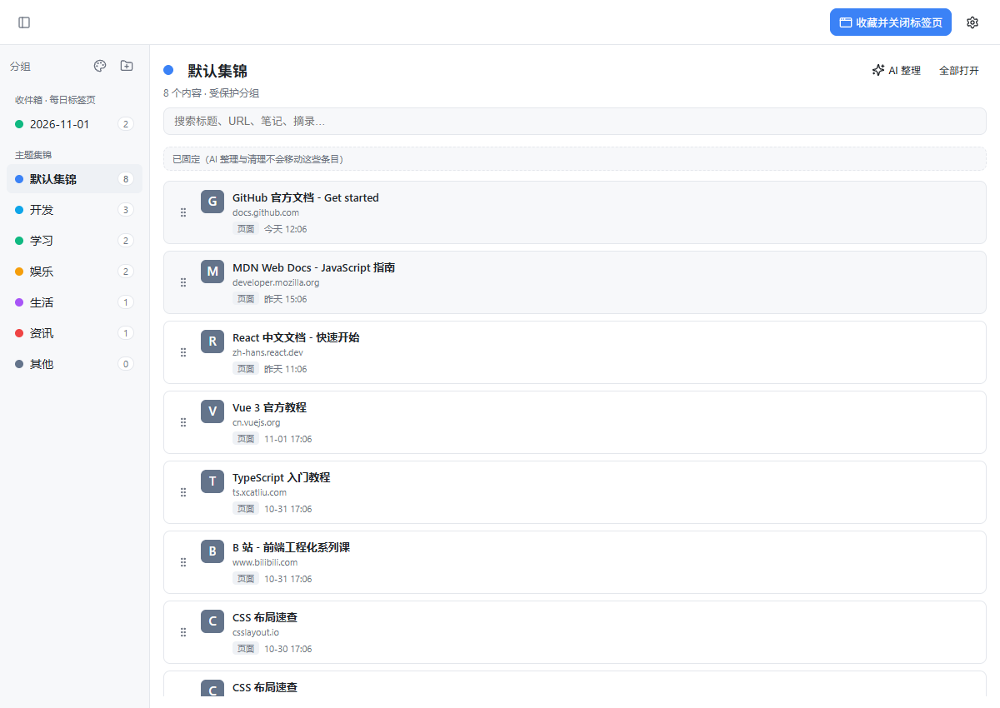
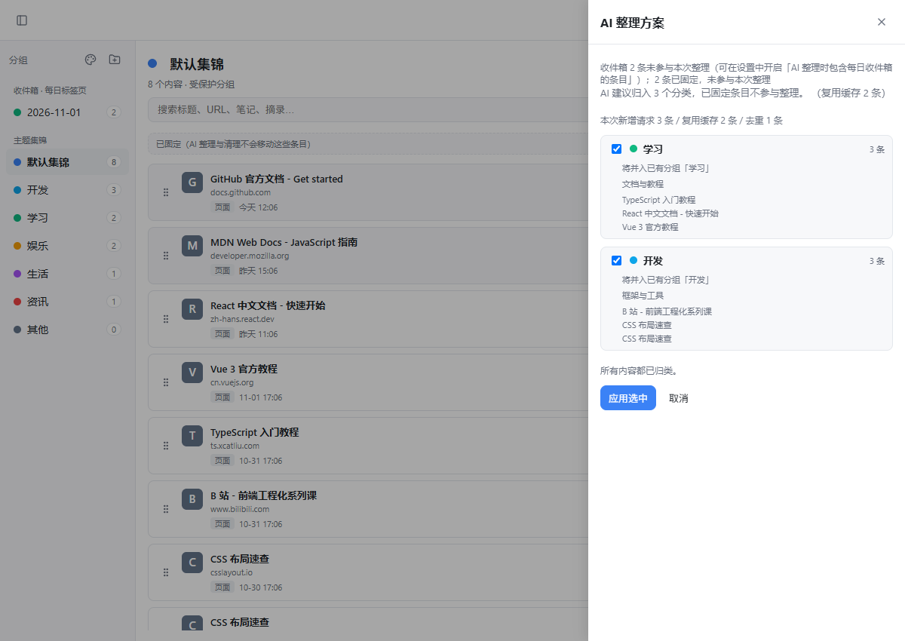
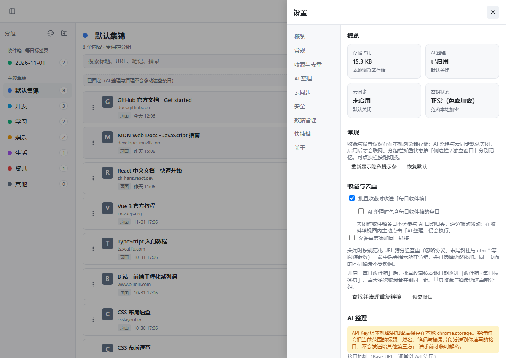
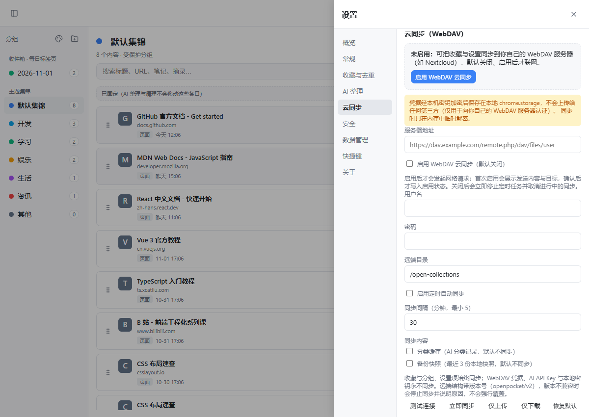

把散落的网页，收进自己的集锦
本地优先的网页收藏与整理扩展：收藏页面与摘录、批量收进标签页、可选 AI 粗分类、可选 WebDAV 同步到你自己的服务器。Edge 集锦停了之后，数据依然完全属于你。

收藏 + 摘录 + 批量收标签
一键收藏当前页、保存选中文字为带来源的摘录、把整窗标签页收进「每日收件箱」再慢慢整理。
可选 AI 粗分类
只从你维护的分类表中选择，整理前预览方案、可撤销；默认关闭，只发标题与片段到你自己的接口。
本地优先 + 可选自托管同步
数据默认只存在本机；可选 WebDAV 同步到自己的服务器；凭据免密加密保存，永不同步。
侧边栏里完成全部整理
点击工具栏图标打开侧边栏：分组、搜索、拖拽排序、跨组移动、批量打开，一气呵成。宽屏时也可以打开独立管理窗口。


AI 只按你的分类表整理
固定六项粗分类（可改）：开发编程 / 学习 / 娱乐 / 生活 / 资讯 / 其他。AI 不能自造分类；整理前预览每个分组的内容与理由，显示本次新增请求与缓存复用数量，应用前自动备份，结果可撤销。

设置集中在一处，且可以搬走
分区导航 + 概览状态卡片；控件即时生效，危险操作二次确认。一键导出全部设置（不含任何凭据值），导入前差异预览、自动备份、可回滚。


安装：三步
- 下载或克隆仓库：
git clone https://github.com/SiRan-Dev/Open-Collections.git - 打开
edge://extensions（Edge）或chrome://extensions（Chrome），开启「开发人员模式」 - 点「加载解压缩的扩展」，选择仓库根目录；点击工具栏的 Open Collections 图标开始使用
Edge 商店 / Chrome 应用商店上架筹备中，商店版本与仓库一致。
隐私承诺
- 本地优先全部收藏、摘录与设置默认只保存在你本机的浏览器存储中，卸载即清除。
- 零遥测无账号、无分析、无广告、无统计、无远程代码，开发者不会收到你的任何数据。
- 同步可选WebDAV 同步默认关闭，数据只发给你自己填写的服务器；AI 整理默认关闭，只发标题与片段到你自己的接口。首次启用都会先展示发送内容与目标。
- 凭据免密加密WebDAV 密码与 AI Key 由本机自动生成的保险库密钥 AES-GCM 加密保存，无需设置密码，也绝不同步。详见隐私政策。
常见问题
和 Edge 原来的「集锦」有什么不同？
集锦已于 2025 年从 Edge 移除。Open Collections 在本地延续这个体验，并补上集锦缺失的：开放数据格式（JSON 可导出）、带来源的摘录、批量收藏每日收件箱、同链接去重、可选 AI 粗分类、WebDAV 自托管同步、默认集锦固定区、设置导出/导入，而且开源可审查。
我的数据存在哪？换电脑怎么办？
全部在本机浏览器存储中。迁移可选：① 设置页导出 JSON/HTML 备份；② 配置 WebDAV 同步到自己的服务器；③ 导出设置为 JSON 后在新机器导入（差异预览 + 自动备份可回滚）。凭据不参与任何导出与同步，需在新机器重新填写。
需要注册账号吗？
不需要。没有注册、登录、云端账号体系；WebDAV 与 AI 接口都由你自己提供，扩展本身没有任何服务端。
AI 是必须的吗？会把我的数据发给谁？
不是必须的，且默认关闭。启用后只在整理时向你自己填写的 https OpenAI 兼容接口发送当前整理范围的标题（≤80 字）、域名、笔记（≤60 字）、摘录片段（≤100 字）与 API Key；开发者收不到这些数据。核心功能（收藏、搜索、拖拽、去重、同步）完全不依赖 AI。
「默认集锦」为什么删不掉？
它是受保护的系统分组，保证始终有一个固定归宿；可以重命名，内容可自由增删。分组内的固定条目（图钉）不受 AI 整理与重复清理影响。
扩展会联网吗？
只有三种情况：你点「摘录」时读取当前页选中文字（网页权限）；你启用并确认 WebDAV 后连接你自己的服务器；你启用并确认 AI 整理后连接你自己的接口。除此之外没有任何网络请求。